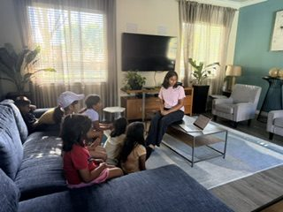
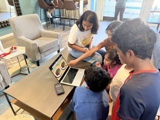
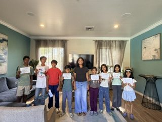

Dhatri had done a wonderful job teaching our kids about neuroscience in a fun and engaging way. Kids were completely engaged and eager to learn more about the brain and how it functions. The website is also very well designed and simple for the kids to follow through.
— Parent of AnanyaAbout
A Student-Led Journey into the Brain
I’m Dhatri, a high school student who is passionate about the brain and how it works. I created Journey Brain to share what I’ve learned through fun, interactive workshops for younger students. My goal is to make neuroscience exciting and easy to understand.
This journey began with my 2024 MAGIC project, where I had the opportunity to be mentored by Somya Panchal. Her guidance helped spark my interest in neuroscience and inspired me to start teaching younger students.
Later, my experience with the Brain Bee deepened my curiosity and love for the brain. That inspired me to design these workshops and create this website as a place for kids to explore, learn, and have fun with neuroscience. This website is like a science notebook that became a website. I want to keep improving it as I learn more.
📷 Workshop in Action



💬 What Families Say
My son thoroughly enjoyed all the neuroscience sessions by Dhatri and learned so many interesting facts about brain functioning. He looked forward to the sessions every week and loved the website she designed.
— Parent of NishanthMy child really enjoyed the workshops. The activities were fun, interactive, and made learning about the brain easy to understand.
Parent of PrabhavHi Dhatri akka! I’ve really enjoyed the website; it’s been a great help in memorizing and learning about the brain in a fun and interesting way! Thank you so much for creating it ⭐️🫶
— Student Kiranteji